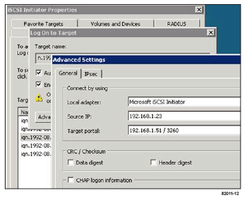
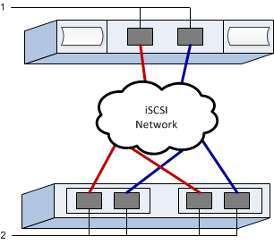

Solicitar cambios en el documento
Solicitar cambios en el documento Editar en GitHub
Editar en GitHub Guía del colaborador
Guía del colaboradorEjecute tareas específicas de iSCSI
Colaboradores
Para el protocolo iSCSI, es posible configurar los switches, configurar la red en el lado de la cabina y del host y, luego, verificar las conexiones de red IP.
Paso 1: Configuración de los switches: ISCSI, Windows
Los switches se configuran según las recomendaciones del proveedor para iSCSI. Estas recomendaciones pueden incluir tanto directivas de configuración como actualizaciones de código.
-
Dos redes separadas para una mayor disponibilidad. Asegúrese de aislar el tráfico de iSCSI para separar los segmentos de red mediante VLAN o dos redes separadas.
-
Activación del control de flujo de hardware de envío y recepción fin a fin.
-
Control de flujo de prioridad desactivado.
-
Si corresponde, tramas gigantes habilitadas

|
LACP/canales de puerto no se admite en los puertos del switch de la controladora. No se recomienda LACP del lado del host; el acceso multivía proporciona los mismos beneficios o mejor. |
Consulte la documentación de su proveedor de switches.
Paso 2: Configuración de redes: ISCSI Windows
Es posible configurar la red iSCSI de varias maneras, según los requisitos de almacenamiento de datos. Consulte al administrador de red si desea obtener consejos sobre cómo seleccionar la mejor configuración para su entorno.
Una estrategia eficaz para configurar la red iSCSI con redundancia básica es conectar cada puerto de host y un puerto de cada controladora a fin de separar los switches y particionar cada conjunto de puertos de host y controladora en segmentos de red separados mediante VLAN.
-
Activación del control de flujo de hardware de envío y recepción fin a fin.
-
Control de flujo de prioridad desactivado.
-
Si corresponde, tramas gigantes habilitadas
Si utiliza tramas gigantes dentro DE LA SAN IP por motivos de rendimiento, asegúrese de configurar la cabina, los switches y los hosts para utilizar tramas gigantes. Consulte la documentación de su sistema operativo y de switches para obtener información sobre cómo habilitar tramas gigantes en los hosts y en los switches. Para habilitar tramas gigantes en la cabina, complete el procedimiento en el paso 3.
Consulte la documentación de su proveedor de switches.
|
|
Muchos switches de red deben configurarse por encima de 9,000 bytes para sobrecarga de IP. Consulte la documentación de su switch para obtener más información. |
Paso 3: Configuración de redes en la cabina: ISCSI, Windows
Es posible utilizar la interfaz gráfica de usuario de SANtricity System Manager para configurar redes iSCSI en el lado de la cabina.
-
La dirección IP o el nombre de dominio de una de las controladoras de la cabina de almacenamiento.
-
Una contraseña de la interfaz gráfica de usuario de System Manager, o RBAC o LDAP y un servicio de directorio configurado para el acceso de seguridad apropiado a la cabina de almacenamiento. Consulte la ayuda en línea de System Manager de SANtricity para obtener más información acerca de Access Management.
En esta tarea, se describe cómo acceder a la configuración del puerto iSCSI desde la página hardware. También puede acceder a la configuración desde MENU:System[Ajustes > Configurar puertos iSCSI].
-
Desde el explorador, introduzca la siguiente URL:
https://<DomainNameOrIPAddress>IPAddresses la dirección de una de las controladoras de la cabina de almacenamiento.La primera vez que se abre SANtricity System Manager en una cabina sin configurar, aparece el aviso Set Administrator Password. La gestión del acceso basada en roles configura cuatro roles locales: Administración, soporte, seguridad y supervisión. Los últimos tres roles tienen contraseñas aleatorias que no se pueden descifrar. Una vez que configura una contraseña para el rol de administración, puede cambiar todas las contraseñas con las credenciales de administración. Consulte la ayuda en línea de SANtricity System Manager si desea más información acerca de los cuatro roles de usuario local.
-
Introduzca la contraseña del administrador del sistema para el rol de administración en los campos Configurar contraseña de administrador y Confirmar contraseña y, a continuación, seleccione el botón Configurar contraseña.
Si al abrir System Manager no hay pools, grupos de volúmenes, cargas de trabajo ni notificaciones configurados, se inicia el asistente de configuración.
-
Cierre el asistente de configuración.
Más adelante se utilizará el asistente para completar las tareas de configuración adicionales.
-
Seleccione hardware.
-
Si el gráfico muestra las unidades, haga clic en Mostrar parte posterior de la bandeja.
El gráfico cambia y muestra las controladoras en lugar de las unidades.
-
Haga clic en la controladora con los puertos iSCSI que desea configurar.
Aparece el menú contextual de la controladora.
-
Seleccione Configurar puertos iSCSI.
Se abre el cuadro de diálogo Configurar puertos iSCSI.
-
En la lista desplegable, seleccione el puerto que desea configurar y, a continuación, haga clic en Siguiente.
-
Seleccione los valores del puerto de configuración y, a continuación, haga clic en Siguiente.
Para ver todas las configuraciones de puerto, haga clic en el enlace Mostrar más opciones de puerto situado a la derecha del cuadro de diálogo.
Opción de configuración de puertos Descripción Velocidad de puerto ethernet configurada
Seleccione la velocidad deseada. Las opciones que aparecen en la lista desplegable dependen de la velocidad máxima que pueda soportar la red (por ejemplo, 10 Gbps).
Las tarjetas de interfaz del host iSCSI opcionales en las controladoras E5700 y EF570 no negocian automáticamente las velocidades. Debe configurar la velocidad de cada puerto en 10 GB o 25 GB. Todos los puertos deben tener la misma velocidad. Habilite IPv4/Habilitar IPv6
Seleccione una o ambas opciones para habilitar la compatibilidad con las redes IPv4 e IPv6.
Puerto de escucha TCP (disponible haciendo clic en Mostrar más opciones de puerto).
De ser necesario, introduzca un nuevo número de puerto. El puerto de escucha es el número de puerto TCP que la controladora utiliza para escuchar inicios de sesión iSCSI de iniciadores iSCSI del host. El puerto de escucha predeterminado es 3260. Debe introducir 3260 o un valor entre 49 49152 y 65 65535.
Tamaño de MTU (disponible haciendo clic en Mostrar más opciones de puerto).
De ser necesario, introduzca un nuevo tamaño en bytes para la unidad de transmisión máxima (MTU). El tamaño de MTU predeterminado es de 1500 bytes por trama. Debe introducir un valor entre 1500 y 9000.
Habilite las respuestas PING de ICMP PING
Seleccione esta opción para habilitar el protocolo de mensajes de control de Internet (ICMP). Los sistemas operativos de equipos en red usan ese protocolo para enviar mensajes. Esos mensajes ICMP determinan si es posible acceder a un host y cuánto tiempo debe transcurrir para enviar y recibir los paquetes de ese host.
Si seleccionó Activar IPv4, se abre un cuadro de diálogo para seleccionar la configuración IPv4 después de hacer clic en Siguiente. Si seleccionó Activar IPv6, se abre un cuadro de diálogo para seleccionar la configuración de IPv6 después de hacer clic en Siguiente. Si seleccionó ambas opciones, primero se abre el cuadro de diálogo de configuración IPv4 y después de hacer clic en Siguiente, se abre el cuadro de diálogo de configuración de IPv6.
-
Configure los valores para IPv4 o IPv6 de forma automática o manual. Para ver todas las opciones de configuración de puertos, haga clic en el enlace Mostrar más valores situado a la derecha del cuadro de diálogo.
Opción de configuración de puertos Descripción Obtener configuración automáticamente
Seleccione esta opción para obtener automáticamente la configuración.
Especificar manualmente la configuración estática
Seleccione esta opción e introduzca una dirección estática en los campos. En el caso de IPv4, incluya la máscara de subred y la puerta de enlace. En el caso de IPv6, incluya la dirección IP enrutable y la dirección IP del enrutador.
Active la compatibilidad con VLAN (disponible haciendo clic en Mostrar más opciones).
Esta opción solo está disponible en un entorno iSCSI. No está disponible en entornos NVMe over roce. Seleccione esta opción para habilitar una VLAN e introducir su ID. Una red de área local virtual (VLAN) es una red lógica que se comporta como si estuviese físicamente separada de otras redes de área local virtuales y físicas (LAN) admitidas por los mismos switches, los mismos enrutadores, o ambos.
Activar prioridad ethernet (disponible haciendo clic en Mostrar más valores).
Esta opción solo está disponible en un entorno iSCSI. No está disponible en entornos NVMe over roce. Seleccione esta opción para habilitar el parámetro que determina la prioridad de acceso a la red. Use la barra deslizante para seleccionar una prioridad entre 1 y 7. En un entorno de red de área local (LAN) compartida, como Ethernet, es posible que muchas estaciones compitan por el acceso a la red. El acceso se otorga por orden de llegada. Es posible que dos estaciones intenten acceder a la red al mismo tiempo, lo que provoca que ambas estaciones se apagen y esperen antes de volver a intentarlo. Este proceso se minimiza para Ethernet con switch, donde existe una sola estación conectada a un puerto del switch.
-
Haga clic en Finalizar.
-
Cierre System Manager.
Paso 4: Configurar las redes en el lado del host—iSCSI
Es necesario configurar las redes iSCSI en el lado del host para que el iniciador de iSCSI de Microsoft pueda establecer sesiones con la cabina.
-
Switches totalmente configurados que se usarán para transportar tráfico de almacenamiento iSCSI.
-
Activación del control de flujo de hardware de envío y recepción fin a fin
-
Control de flujo de prioridad desactivado.
-
Configuración iSCSI del lado de la cabina completada.
-
La dirección IP de cada puerto de la controladora.
Estas instrucciones asumen que se utilizarán dos puertos NIC para el tráfico iSCSI.
-
Desactive los protocolos de adaptador de red no utilizados.
Estos protocolos incluyen, entre otros, QoS, uso compartido de archivos e impresión y NetBIOS.
-
Ejecución
> iscsicpl.exeDesde una ventana de terminal en el host para abrir el cuadro de diálogo Propiedades del iniciador iSCSI. -
En la ficha Discovery, seleccione Discover Portal y, a continuación, introduzca la dirección IP de uno de los puertos de destino iSCSI.
-
En la ficha Targets, seleccione el primer portal de destino que descubrió y, a continuación, seleccione Connect.
-
Seleccione Activar multi-path, seleccione Agregar esta conexión a la lista de destinos favoritos y, a continuación, seleccione Avanzado.
-
Para adaptador local, seleccione Iniciador iSCSI de Microsoft.
-
Para IP de iniciador, seleccione la dirección IP de un puerto en la misma subred o VLAN que uno de los destinos iSCSI.
-
Para IP de destino, seleccione la dirección IP de un puerto en la misma subred que IP de iniciador seleccionada en el paso anterior.
-
Mantenga los valores predeterminados de las casillas de verificación restantes y, a continuación, seleccione Aceptar.
-
Seleccione Aceptar de nuevo al volver al cuadro de diálogo conectar a destino.
-
Repita este procedimiento para cada puerto de iniciador y sesión (ruta lógica) a la cabina de almacenamiento que desee establecer.

Paso 5: Verifique las conexiones de red IP—iSCSI, Windows
Para verificar las conexiones de red del Protocolo de Internet (IP), utilice las pruebas ping para asegurarse de que el host y la matriz pueden comunicarse.
-
Seleccione MENU:Start[todos los programas > Accessories > Command Prompt] y, a continuación, utilice la CLI de Windows para ejecutar uno de los siguientes comandos, en función de si las tramas gigantes están habilitadas:
-
Si las tramas gigantes no están habilitadas, ejecute este comando:
ping -s <hostIP\> <targetIP\>
-
Si se habilitan las tramas gigantes, ejecute el comando ping con un tamaño de carga útil de 8,972 bytes. Los encabezados combinados IP e ICMP son 28 bytes, que cuando se agregan a la carga útil, equivalen a 9,000 bytes. El modificador -f establece el
don’t fragment (DF)bit. El interruptor -l permite ajustar el tamaño. Estas opciones permiten que se transmitan correctamente las tramas gigantes de 9,000 bytes entre el iniciador iSCSI y el destino.ping -l 8972 -f <iSCSI_target_IP_address\>
En este ejemplo, la dirección IP de destino iSCSI es
192.0.2.8.
C:\>ping -l 8972 -f 192.0.2.8 Pinging 192.0.2.8 with 8972 bytes of data: Reply from 192.0.2.8: bytes=8972 time=2ms TTL=64 Reply from 192.0.2.8: bytes=8972 time=2ms TTL=64 Reply from 192.0.2.8: bytes=8972 time=2ms TTL=64 Reply from 192.0.2.8: bytes=8972 time=2ms TTL=64 Ping statistics for 192.0.2.8: Packets: Sent = 4, Received = 4, Lost = 0 (0% loss), Approximate round trip times in milli-seconds: Minimum = 2ms, Maximum = 2ms, Average = 2ms
-
-
Número a
pingComando desde cada dirección de iniciador de host (la dirección IP del puerto Ethernet de host que se utiliza para iSCSI) a cada puerto iSCSI de la controladora. Ejecute esta acción desde cada servidor host en la configuración, cambiando las direcciones IP según sea necesario.
Si falla el comando (por ejemplo, devuelve Packet needs to be fragmented but DF set), verifique el tamaño de MTU (compatibilidad con tramas gigantes) para las interfaces Ethernet en el servidor host, la controladora de almacenamiento y los puertos del switch.
Paso 6: Registre su configuración
Puede generar e imprimir un PDF de esta página y, a continuación, utilizar la hoja de trabajo siguiente para registrar la información de configuración del almacenamiento iSCSI. Esta información es necesaria para ejecutar tareas de aprovisionamiento.
Configuración recomendada
Las configuraciones recomendadas constan de dos puertos de iniciador y cuatro puertos de destino con una o varias VLAN.

IQN objetivo
| Número de llamada | Conexión de puerto de destino | IQN |
|---|---|---|
2 |
Puerto de destino |
Asignando el nombre de host
| Número de llamada | Información del host | Nombre y tipo |
|---|---|---|
1 |
Asignando el nombre de host |
|
Tipo de SO de host |